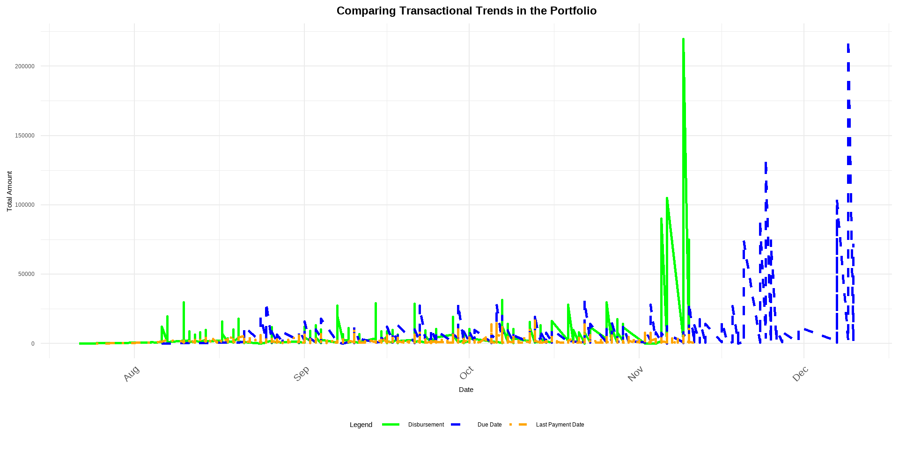
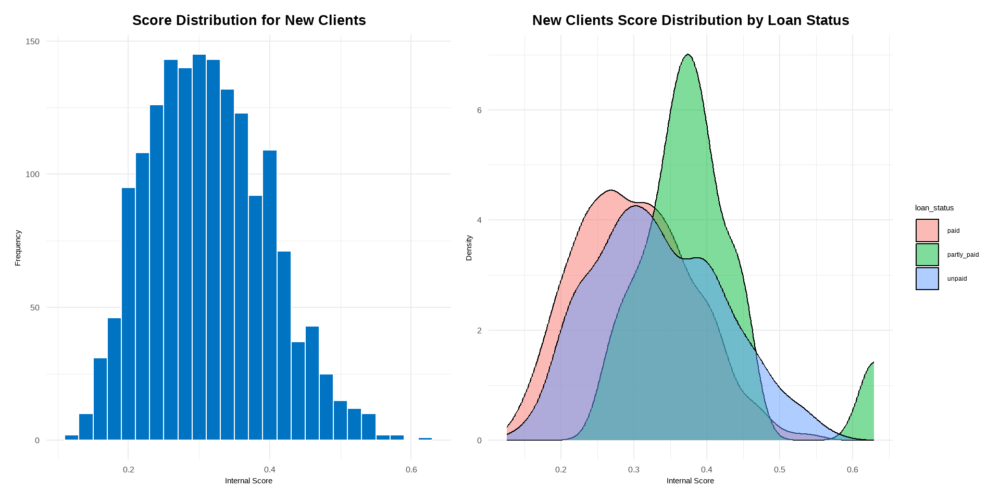
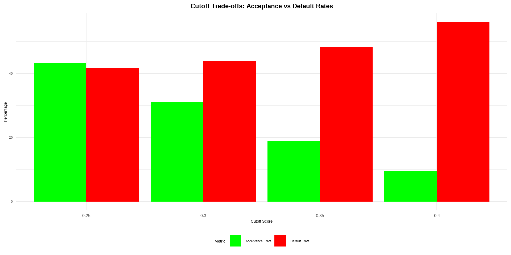
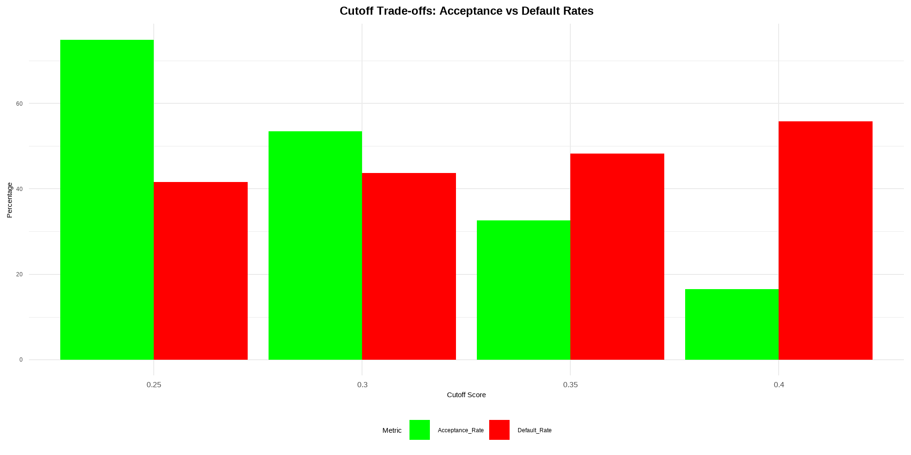

| Number of Disbursed Loans | 4,841 |
| Total Disbursed Amount | 3,727,029 |
| Average Loan Size | 770 |
| Current Active Loans | 2,269 |
| Outstanding Principal Balance | 2,034,700 |
| Credit Utilization Ratio | 99.03% |
2025-01-15
The loan portfolio showcases a dynamic interplay between growth opportunities and emerging risks, capturing loan performance during the second half of 2020—a period significantly impacted by the economic disruptions of the pandemic. With a high credit utilization ratio of 99.03% and over 2,200 active loans, the portfolio highlights robust demand and lending activity.
However, elevated delinquency rates and a substantial concentration of overdue risks, particularly among new clients with a 66.11% PAR30 volume share, underscore the urgent need for targeted interventions to safeguard portfolio health and enhance risk management.
Proactive strategic adjustments to cutoff scores, refined client screening processes, and tailored lending strategies can balance acceptance rates, mitigate defaults, and minimize potential losses, ensuring sustainable growth and long-term resilience in a challenging economic environment.
| Number of Disbursed Loans | 4,841 |
| Total Disbursed Amount | 3,727,029 |
| Average Loan Size | 770 |
| Current Active Loans | 2,269 |
| Outstanding Principal Balance | 2,034,700 |
| Credit Utilization Ratio | 99.03% |

Insights: - November Spikes: suggest seasonal demands or economy related issues. - Scattered due dates reflect variability in loan terms across the portfolio. - Delays: Misalignment between due dates and last payment dates highlights delayed repayments or defaults.
Key States: - High risks in Maharashtra, Andhra Pradesh, and Telangana. - States like Gujarat and Delhi also show moderate PAR30 volumes, warranting monitoring.
| Previous Loan Avg Days Late | -6 |
| Current Loan Avg Days Late | 15 |
| Delinquency Rate (0 Days) | 27.89% |
| 30-Day Delinquency Rate | 13.51% |
| Repayment Ratio | 57.41% |
| Default Rate | 84.00% |
| PAR7 (Volume) | 1,489,700 |
| PAR7 Volume Share | 73.00% |
| PAR30 (Number) | 1100 |
| PAR30 (Number Share) | 48.00% |
| PAR30 (Volume) | 897,600 |
| PAR30 Volume Share | 44.00% |
| Client Type | Loans(N) | Users(N) | Total Repaid () | PAR30 Volume Share (%) |
|---|---|---|---|---|
| new | 2868 | 2868 | 1297000 | 66.11 |
| returning | 1973 | 1294 | 842550 | 26.46 |
Score Summary and Distribution Insights: 2868 new clients were analyzed, their Internal score data points is concentrated between 0.25 and 0.37 with low variation at 0.0842 and values span from 0.13 to 0.63. Tail ends indicate smaller high and low-risk groups.

Cutoff Strategy Analysis:
| Cutoff Score | Accepted Clients | Acceptance Rate | Default Rate | Potential Loss |
|---|---|---|---|---|
| 0.25 | 1245 | 43.41% | 37.99% | 352,425 |
| 0.30 | 889 | 31% | 41.51% | 274,936 |
| 0.35 | 542 | 18.9% | 46.68% | 188,506 |
| 0.40 | 275 | 9.59% | 54.55% | 111,763 |

The visual shows that Higher cutoffs reduce acceptance rates but also lower default rates
Lower cutoffs (0.25) maximize growth but expose the portfolio to higher risks and potential losses.
Higher cutoffs (0.40) minimize potential losses but significantly reduce the number of clients accepted.
Balance Strategy (0.30): accepts 31% clients, balancing manageable defaults (41.51%) with reduced losses.
Considerations:Grace period of 7 days, adjusting for late payments in the pandemic year (2020).This helps account for temporary repayment delays without unfairly penalizing clients.
Observations: Client risk tiers - High-risk (₦20,000 revenue, low scores), Moderate-risk (₦18,000, manageable risk), Low-risk (₦16,000, good repayment), Very Low-risk (₦15,000, least likely to default)

| Client Type | Rule | Rationale | Expected Impact |
|---|---|---|---|
| New | Minimum Internal Score = 0.30 | Reduces default risks by ensuring baseline creditworthiness. | ~65% acceptance rate; ~15% reduction in default rate. |
| New | Loan Cap to favour low income clients | Limits exposure to untested clients, reducing potential losses. | ~25% reduction in potential losses; builds credit history. |
| Returning | Performance-Based Loan Scaling | Encourages loyalty and rewards good repayment behavior. | Increased retention and portfolio size with manageable risk. |
| Returning | Penalty for Late Payments | Offsets delinquency costs and promotes timely payments. | ~10% reduction in late payments; compensates operational costs. |
I will look forward to your feedback LinkedIn.